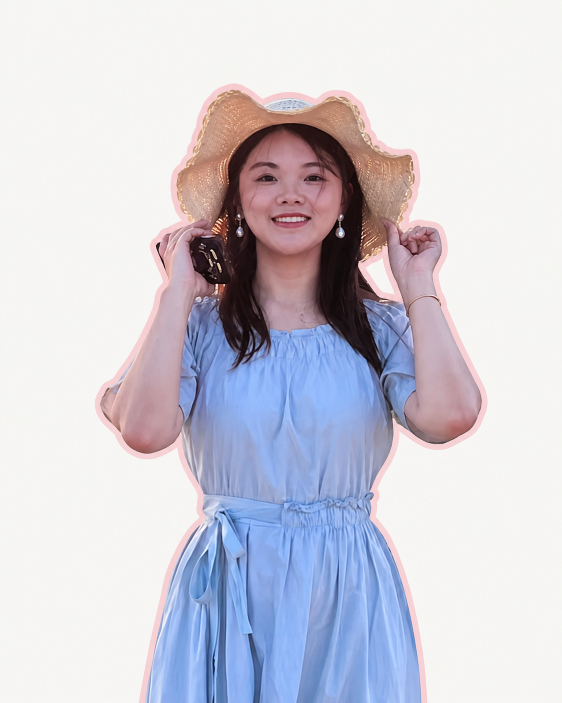

Hi, I'm 冯子慧
中国科学院大学 · 科学技术哲学 / 西安电子科技大学 · 哲学
「在理性思考里，保留一点有趣」
本科的起点：书院新媒体文案组组长，也是辩论队队长
研究生的日常：从宣传部副部长到部长，把创意变成活动
工作的一面：在深维智信做市场实习，接触 AI 产品与品牌内容
用文字讲故事，用设计让想法被看见
排版 110+ 篇、视觉物料 40+ 张，认真完成每一次内容表达
喜欢观察、拍照与记录，也愿意为一个好想法付诸行动。
A COLLECTION OF THINGS I MADE
每一段经历，都有作品留下。
从一篇推文到一场文化活动，记录我参与策划、创作与执行的校园实践。
选一张邮票，看看这件事是怎样完成的。
新媒体栏目运营
栏目策划 · 文案创作 · 公众号排版
2020—2023 / 2024起国风雅韵文化节
活动总策划 · 宣传主要负责人
2025.10.31中国古代科学技术
展板设计 · 活动报道 · 视频剪辑
2026.04—05“一二·九”合唱
招募宣传 · 活动报道 · 视频协作
研究生在校期间新年师生联欢会
宣传统筹 · 暖场视频 · 现场总控
2024.12 / 2026.01“五月的鲜花”
参与编剧 · 舞台背景 · 宣传
2025.03—05“大美西电”
线上宣传 · 投稿收集 · 投票协作
2023.04—06开学迎新
签到组织 · 现场摄影 · 迎新推文
2025.09毕业典礼与影像
毕业影像参与 · 素材与内容组织
2025—2026宣传部经验分享
招新与分享 · 编辑规范 · 任务分工
2025.09起我的实习手记
北京深维智信科技有限公司 · 市场实习生
2025.06 — 2025.08 / AI 产品与内容传播产品与行业调研
资料研究 / 行业场景
品牌与内容传播
活动稿件 / 技术与案例
SEO 与 AI 内容实践
关键词 / Prompt / 内容分发
点击一本笔记，了解我参与的工作与思考。
先理解问题，再认真表达。THINK CLEARLY. MAKE IT UNDERSTOOD.
04 / CREATIVE GALLERY
把想法，做成看得见的作品。
公众号视觉与活动海报 · 点击一张，放大看看05 / LIFE IN FRAMES
生活里的小小瞬间。
在工作之外，也用镜头收藏日常。06 / KEEP IN TOUCH
下一段故事，期待与你一起。
谢谢你看到这里，这是一封留给你的短信。To：未来一起工作的你
我是冯子慧，中国科学院大学科学技术哲学硕士在读。
正在寻找内容运营、品牌宣传、市场相关的工作机会。
如果我的经历和作品与你的团队契合，欢迎聊聊。
- EMAIL / 邮箱
- fengzihui0225@163.com
- PHONE / 电话
- 152 5454 3353
- CITY / 城市
- 意向城市 · 北京
A LITTLE CURIOSITY,
A LOT TO CREATE.
愿下一次见面，是一起把好想法做出来。THANK YOU FOR STOPPING BY ♡